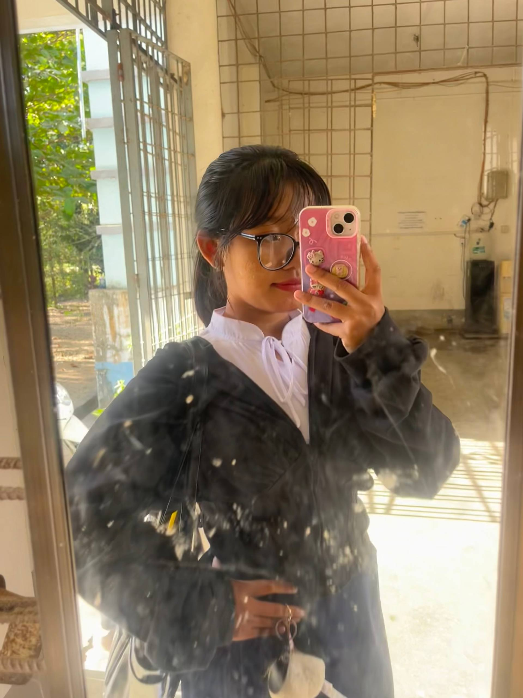

မမကို သား ဒီပုံလေးနဲ့ပဲ စတွေ့ခဲ့တာ။
ဒီပုံလေးက သားကို မမကို ပထမဆုံးရင်ခုန်စေခဲ့တဲ့ ပုံလေးတစ်ပုံပဲ။

မမရေ...
ဒီ Website လေးက မမအတွက် သားရဲ့ ချစ်ခြင်းမေတ္တာတွေကို စုစည်းထားတဲ့ နေရာလေးတစ်ခုပါ။
မမကို စတွေ့ခဲ့တဲ့နေ့ကစပြီး သားရဲ့ နှလုံးသားထဲမှာ မမတစ်ယောက်တည်းပဲ နေရာယူထားခဲ့တာ။
ပထမဆုံးတွေ့ခဲ့တဲ့ ပုံလေးကစပြီး ဒီနေ့အထိ မမက သားရဲ့ အချစ်ဆုံး၊ အမြတ်နိုးဆုံး လူတစ်ယောက်ပါ။
မမကို ချစ်မိခဲ့တာ အကြောင်းပြချက်မလိုဘူး...
Ma" Nyein Nyein Nwe ဖြစ်နေလို့ကို ချစ်မိတာ။ ❤️
မမက သားရဲ့ ပထမဆုံးရင်ခုန်သံလေးပါ။ 🫶